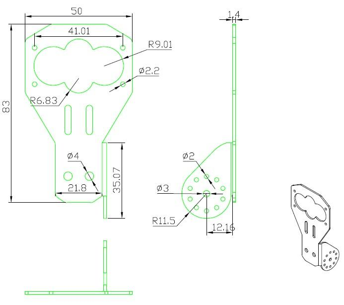

This is an aluminum bracket kit for Ultra Sonic Sensor. With this kit ,one RB-421 Servo(http://www.seeedstudio.com/depot/rb421-servo-2-pcs-pack-p-652.html?cPath=77)and one Ultra Sonic Sensor(http://www.seeedstudio.com/depot/ultra-sonic-range-measurement-module-p-626.html?cPath=144_149), you can build a 2 degrees freedom servo mount assembly.
This kit is professional in steering the ultra sonic sensor on a robot for 180° of rotation from side to side and front to back.
These parts also have holes at 20mm spacings so they can be attached to Seeed (http://www.seeedstudio.com/depot/starter-bundle-harness-p-906.html?cPath=178_184)Starter Bundle Harness which has 20mm spacings as well.

For holding Sonic sensors while you can turn it with different angles
| Devic | Value | Manufacturer | Details（size:mm) |
|---|---|---|---|
| sonar sensor bracket（10033R0) | 1 | ||
| angle mounting bracket(10034R0) | 1 | ||
| Plastic rivet | 2 | HKWASI | D3x5.5(diameter 3 length 5.5 ,black) |
| Plastic rivet | 10 | HKWASI | D2X4.8(diameter 2 length 4.8 ,black) |
| selflocking plastic rope（扎带） | 2 | 2x56 |
If you have questions or other better design ideas, you can go to our forum or wish to discuss.
Give the product link on Bazaar.
Other related products and resources.
This documentation is licensed under the Creative Commons Attribution-ShareAlike License 3.0 Source code and libraries are licensed under GPL/LGPL, see source code files for details.
Copyright (c) 2008-2016 Seeed Development Limited (www.seeedstudio.com / www.seeed.cc)